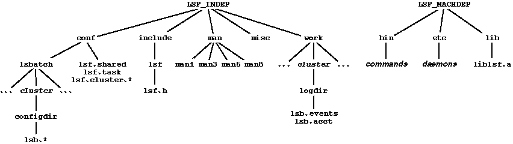

[Contents] [Prev] [Next] [End]
This chapter introduces necessary concepts for LSF system administrators, and describes the preparation that is necessary before the LSF software can be installed and configured. This chapter should be read by system administrators before installing the software.
Topics covered in this chapter are:
The LSF Suite is divided into functional components allowing you to install the exact system you require. Each component is licensed separately. LSF Suite includes the following components:
LSF Base is a prerequisite for all LSF users and all other LSF components. All components are packaged in the same distribution file. The installation program requires you to specify which components are to be installed. By default LSF Batch together with LSF Base are installed. Individual hosts can be configured to run as LSF Batch servers or LSF JobScheduler servers within the same cluster. LSF MultiCluster is licensed on a cluster-wide basis (the entire cluster is either enabled or disabled for multicluster operation).
For detailed descriptions about the LSF Suite components, see 'LSF Product Suite'.
This section lists the host types and operating systems supported by LSF, and the disk space required to install LSF.
LSF requires a UNIX operating system with Internet Protocol (IP) networking. The LSF configuration files and LSF Batch working directories must be installed in a shared file system. The standard installation installs the on-line manual pages as nroff -man source. Preformatted manual pages are included for SGI systems that do not have nroff; you must install these by hand if they are needed.
Specific hardware and software platforms supported are:
Some components of LSF, like the command and daemon binaries, depend on the host type. Others, like the on-line manual pages, are the same size on all systems. Typically, hosts of the same binary type share a single copy of the binaries through a shared file system, and all hosts in the cluster share a single copy of the configuration files, log files and manual pages.
Approximate sizes for the components are given in Table 1 below.
| Component | Platform | Size (KB) |
| binaries | Convex C-Series | 55,700 |
| Cray T90 UNICOS 9.0 | 52,000 | |
| Cray J90 UNICOS 8.0 | 102,300 | |
| DEC ALPHA AXP | 36,500 | |
| DEC ALPHA AXP (AFS) | 2,300 | |
| HP 9000/700, 800 | 31,300 | |
| HP 9000/700, 800 (AFS) | 1,900 | |
| IBM RS/6000 | 30,200 | |
| IBM RS/6000 (AFS) | 1,800 | |
| IBM RS/6000 (DCE) | 950 | |
| Linux 1.2.13 | 31,900 | |
| NEC EWS4800 UX-4800 11.1 | 19,000 | |
| SGI IRIX 5.2, 5.3, 6.1 | 47,700 | |
| SGI IRIX 5.2, 5.3 (AFS) | 2,500 | |
| SONY NEWS-OS 6.1.1 | 19,000 | |
| SunOS 4.1.x | 40,200 | |
| SunOS 4.1.x (AFS) | 2,100 | |
| Solaris 2.3, 2.4, 2.5 | 39,500 | |
| Solaris 2.3, 2.4, 2.5 (AFS) | 2,300 | |
| Solaris 2.3, 2.4, 2.5 (DCE) | 1,100 | |
| Windows NT V3.51, V4.0 | 25,100 | |
| manual pages | (shared) | 1,520 |
| configuration files | (shared) | 70 |
| log files | (shared) | 5,000 |
During installation on each hardware and operating system platform, 30 megabytes of scratch space is necessary. This space can be freed after the installation is complete.
You must have a software license key to run LSF. You may be able to get a time-limited DEMO key by contacting your LSF vendor. Instructions for getting a floating license key are given in 'Getting License Key Information'. Also see the Release Notes for any vendor-specific information about obtaining and installing license keys.
Hosts should be chosen so that users on any host in the cluster have shared access to the computing resources on all hosts. LSF includes sophisticated controls to prevent overloading hosts, so interactive workstations can be configured as LSF servers without degrading performance for the owner.
LSF works best when users' home directories are shared across all hosts in the cluster by NFS, by the Andrew File System (AFS), or by the Distributed File System (DCE/DFS). Interactive and batch jobs can then access files just as they would on the local host. LSF can also be used on systems without shared file space, using built-in remote file access to move job input and output. Additionally, batch jobs can also be run on systems without shared user accounts by using LSF's account mapping facility.
Almost all administrative tasks can be done from a non-root account, so LSF can be used on groups of hosts where other system administration tasks are not shared.
If you have more than one type of host, you should put all available host types together in a single cluster. If you have applications that require specific host types, you can configure resource requirements to select the correct host type for each job. This gives users transparent access to applications, regardless of the host they are logged in to.
The maximum size of an LSF cluster is determined by the load on your network and the memory available on your hosts. Installations exist with clusters of more than 200 hosts supporting heavy workload, and extensive ranges of system sizes and types. The cluster size you select depends on the number of hosts you have available, the administrative organization of the hosts, and the tasks you wish to run. Larger clusters usually allow better load sharing, at the cost of slightly more processing overhead in the LSF servers.
All hosts in an LSF cluster can send jobs to other hosts. A server host is a host where LSF sends jobs to run. A client host is a host that only sends jobs out to other hosts to run. Client hosts do not run any LSF daemons and do not run jobs from other hosts.
You should use as many hosts as possible as servers. The more resources you have available for load sharing, the better performance you can get from your cluster. Client hosts can be used when administrative or resource constraints prevent you from using some hosts as servers, or the hosts are too slow or do not have enough resources to run jobs.
Before starting the installation you must decide where to install the components of LSF. The LSF installation script has defaults for all components, and provides you with the option of selecting a custom location for each component.
LSF Suite V3.0 includes the following components: LSF Base, LSF Batch, LSF JobScheduler (formerly LSF-PJS), and LSF MultiCluster. Select the appropriate components during the installation with lsfsetup. You should have a corresponding software licence (see 'Obtaining a Software License').
LSF Base is a prerequisite for all other LSF components. Unless you specify otherwise, the default is that LSF Batch together with LSF Base are installed.
A single LSF cluster can contain hosts of every type supported by LSF. Clusters that include hosts of more than one type are called mixed clusters or heterogeneous clusters. The LSF documentation uses the term mixed cluster. When installing LSF on a mixed cluster, you should install and configure LSF on one type of host first. After you have the cluster running you can add the other host types.
The recommended directory structure for installing LSF on mixed clusters is given in 'Directory Structure for Mixed Clusters'. Read that section before installing the software.
The cluster name can be any alphanumeric string up to 39 characters long. The cluster name does not need to be the same as the DNS or NIS domain name of the hosts. You should not use a valid host name as the cluster name.
You must choose a user account to act as the primary LSF administrator. This account owns the LSF configuration files and has permission to reconfigure LSF and to control batch jobs submitted by other users. You can use an existing user account, or you can create a new account. By creating a separate LSF administrator account you can allow more than one person to modify the configuration files; if you assign only one individual as the administrator then no one else can modify the configuration.
Once you have installed LSF, you can configure secondary LSF administrators (see 'LSF Administrators'). Secondary LSF administrators have the same privileges as the primary administrator except that they do not have permission to update the LSF configuration files as these files are owned by the primary administrator.
You should not configure the root account as the LSF administrator. Many UNIX network installations restrict the root account so that it does not have permission to write to NFS or AFS mounted directories.
The components of LSF are divided into those files that do not depend on host type and those that do. The LSF installation procedure allows you to choose where to install all parts of the distribution.
The installation examples use /usr/local/lsf as the name of the directory where all LSF files are installed. If you install LSF under another directory name, substitute your directory name in all procedures.
LSF_INDEP specifies the default top-level directory for all host type independent LSF files. This includes manual pages, configuration files, working directories, and miscellaneous files. For example, defining LSF_INDEP as /usr/local/lsf/mnt places manual pages in /usr/local/lsf/mnt/man, configuration files in /usr/local/lsf/mnt/conf, and so on.
CAUTION!
The LSF master host must have read/write access to all files and directories under the LSF_INDEP/work directory, otherwise LSF Batch services will be unavailable. This directory must be shared by all hosts that may potentially become the master.
LSF_MACHDEP specifies the directory where host type dependent files are installed. The machine dependent files are the user programs, daemons, and libraries.
During installation in a mixed cluster, you need to set LSF_MACHDEP to a different directory for each host type. See 'Directory Structure for Mixed Clusters' for details.
The LSF directory structure is shown in Figure 1.

Appendix C lists the various directories used by the LSF system, their mode and their contents.
This section describes the recommended method for installing the LSF configuration files, executables, and other components in mixed clusters.
The goal of this installation procedure is to set up the LSF directory structure so that every host type finds the LSF executables and configuration files under the same file names. For example, if LSF is installed under the /usr/local/lsf directory, then the file name /usr/local/lsf/etc/lim refers to the HP-UX compiled LIM binary on an HP-UX system, and to the SunOS binary on a SunOS system.
To make administration simpler, this procedure places all LSF files on a single NFS partition that must be mounted on every LSF host. Symbolic links are used so that each machine sees the correct host type-specific files.
All of the LSF files are placed in the mnt subdirectory of the /usr/local/lsf directory on the file server. The file server exports the /usr/local/lsf/mnt directory, and all other LSF hosts mount this directory as /usr/local/lsf/mnt.
All the host type-specific files are placed in a subdirectory of /usr/local/lsf/mnt named for the host type. Figure 2 shows the directory structure for an LSF installation with SunOS 4.1 and HP-UX versions of the software. In this example, the LSF_INDEP parameter is set to /usr/local/lsf/mnt. LSF_MACHDEP is set to /usr/local/lsf/mnt/HP-UX to install the HP-UX binaries, and /usr/local/lsf/mnt/SUN41 to install the SunOS 4.1 binaries.
After installation, on each HP-UX host add the following symbolic links:
and similarly for the SunOS 4.1 hosts, replacing HPUX with SUN41. Now users can put /usr/local/lsf/bin in their PATH environment variable, and their PATH is valid on all hosts.
You should back up the root partition disk on each host and the file server disks where LSF components will be placed before installing LSF. Use the normal backup procedure for your site.
Copyright © 1994-1997 Platform Computing Corporation.
All rights reserved.